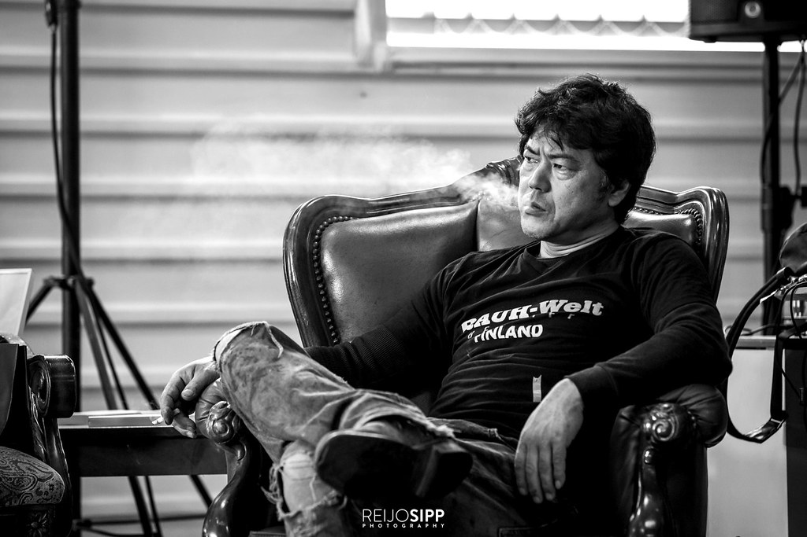

Master of Custom Porsche Builds: Akira Nakai
Akira Nakai of Rauh-Welt Begriff is a renowned figure in the world of custom car builds, particularly known for his work with the Porsche brand. His unique style and attention to detail have made him a legend among car enthusiasts. As an aesthetic car customizer and an individual that indulges in minor performance upgrades, the japanese juggernaut has focused his efforts on merging european and japanese styles to create unique builds for Porsche performance cars.